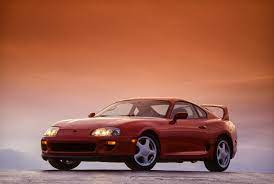

Supra é considerado um carro incrivel, é um carro com a faixa de 190 cavalos de potencia pra cima!!
UM POUCO SOBRE O SUPRA

Supra 1994, Supra 1995, Supra mk3 Supra mk4, Supra mk5 e o SUPRA 2020-2022.
INFORMAÇÕES DELE
Toyota Supra tinha 4,61 m de comprimento, 1,65 m de largura, 1,29 m de altura e 2,63 m de entre-eixos, pesando em torno de 1.270 kg e com estilo bem próprio a época, contando com frente sóbria, faróis duplos, portas grandes e vigias laterais enormes, além de colunas C bem anguladas sobre a traseira.
O MOTIVO
Eu escolhi esse tema em particular pois eu gosto bastate desse carro, eu sonho em ter um desses quando for mais velho, não pela belesa mas pela adrenalina de estar em um possante desses.
SMOKEY NAGATA
Smokey nagata é uma das pesoas que me emxpira a ter um desses. vocês acreditam que ele foi um dos promeiros homens a bater o record de 300 k/h por hora em uma avenida.